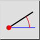
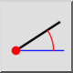
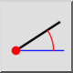
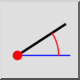

Črta in kot
Toolbar / Icon:
 

Menu: Risanje > Črta > Črta in kot
Shortcut: L, A
Commands: lineangle | la
Toolbar / Icon:
 

Menu: Risanje > Črta > Črta in kot
Shortcut: L, A
Commands: lineangle | la
Konstruira črto z znanim kotom. Črta se mora v praksi po pozicioniranju nato še pokrajšat na pravilno dolžino.